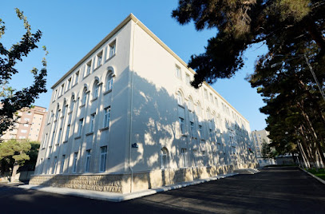

Eğitim Bilgileri
İlköğretim ve Lise
Daha sonra ilk okul ve ortaokulu sıradan devlet okullarında tamamladım. Lise eğitimimi "Fizik, Matematik ve Bilgisayar Bilimleri" yönelimli devlet lisesinde 97,89 ortalama ile tamamladım.


03.10.2006 tarihinde Azerbaycan'ın Bakü şehrinde doğdum.
Daha sonra ilk okul ve ortaokulu sıradan devlet okullarında tamamladım. Lise eğitimimi "Fizik, Matematik ve Bilgisayar Bilimleri" yönelimli devlet lisesinde 97,89 ortalama ile tamamladım.

Lisenin son 2 yılında yurtdışında eğitimi düşünmeye başladım ve YÖS sınavıyla tanıştım. Bu sınava hazırlık için bir dershane seçip orada eğitim aldım ve başarılı bir hazırlık sürecinden sonra toplamı 500 puan olan değerlendirmeden 440 puan elde ettim. Sonuçlarımı Türkiye'nin birçok önde gelen üniversitesine yolladım.
Şu anda Sakarya Üniversitesi'nde Bilgisayar Mühendisliği bölümünde eğitimime devam ediyorum ve kendimi bu alanda geliştirmeye devam edeceğim.